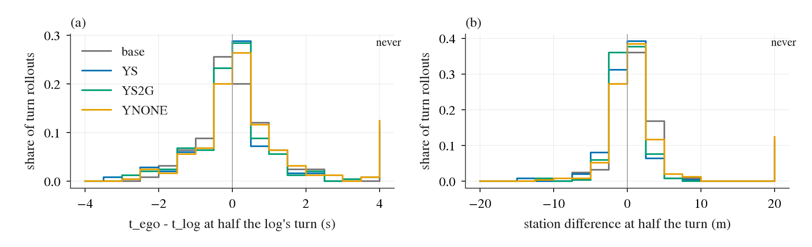
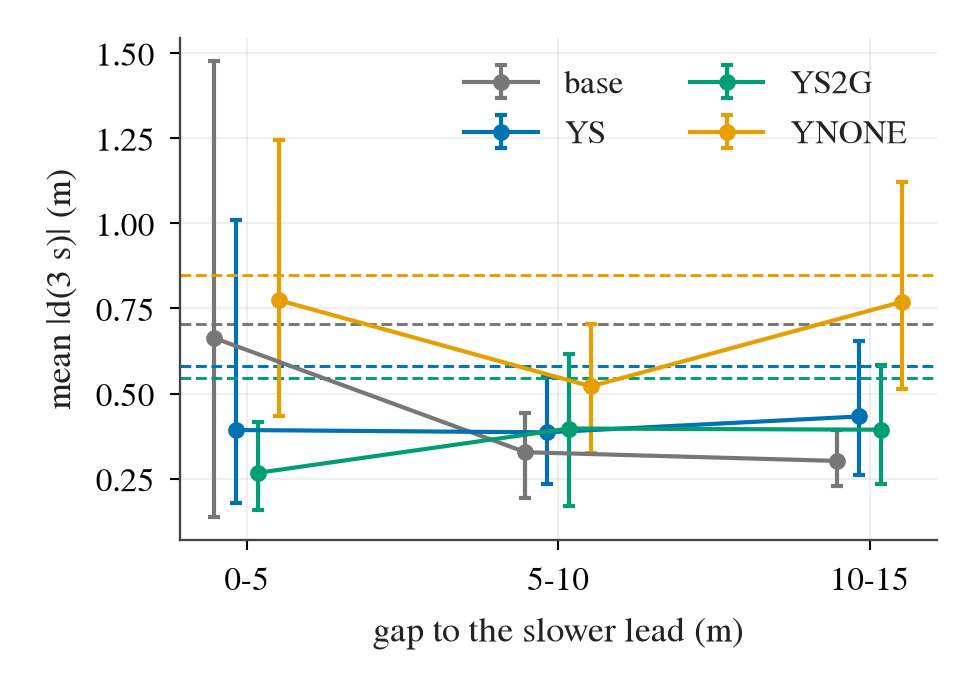
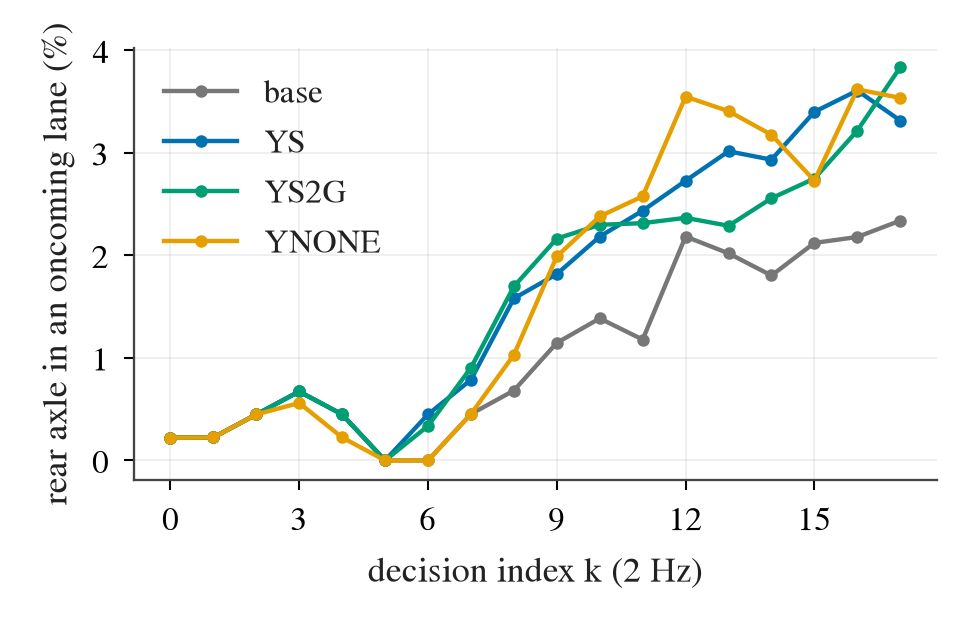
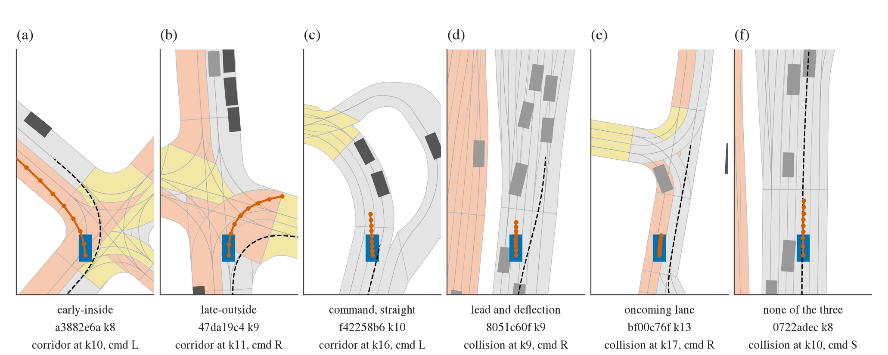

数据：8 个检查点各一个回合，452 个 held 场景（39 个日志，其中 113 个在新加坡、左行），每回合 18 个决策（2 Hz）。检查点：YS（第 1 轮 S 行，两个种子合并）、YS2G（第 2b 轮，现最佳）、
YNONE（不加行的续训，第二对照）、基底 YR10m10-F-s0（YS 的起点）。只读已存的东西：驾驶器日志（位姿、发出的规划、指令）、评估器 2 Hz 序列，以及回合自己的场景加载器（日志路径、
模拟器回放的日志交通、带行驶方向的车道、路线）。预登记在任何读数之前提交（experiments/zeros_mech/plans/2026-10-12-zeros-mech-prereg.md，28631e6b）。
五道闸全过：回合覆盖 99.3%、0 个场景出错（第一次读因 64 个进程的线程池撞到上限而作废、整体重跑一次）；556 个保留了日志文件的回合上，模拟器记录的他车位姿与日志交通重建 158 200 对全部在 0.05 米内，
所以没有日志文件的回合也能用日志交通；日志自己的位姿 99.6% 落在同向车道、0.4% 落在对向车道（方向可信）；重算的 agent hinge 与训练池存的值逐行相同；YS-L18-s1 的 43 个零分与
zeros.csv 逐条一致。置信区间都是按日志聚类的 bootstrap（39 个日志，10 000 次）。数字来源：experiments/zeros_mech/results/zm_report.md、zm.json。
转弯场景 = 日志 8.5 秒内转向 ≥ 45°（125 个），直行场景 = < 15°（248 个）。早 / 晚按沿路站位算：车转到日志总转角一半时，在日志路径上比日志自己更靠前还是更靠后（Δs）； 内 / 外是事件时车在日志弧线的哪一侧。漂移起点是车偏离日志超过 1 米、且此后一直同向变大的第一个决策。
| 量 | 基底 | YS | YS2G | YNONE |
|---|---|---|---|---|
| 转弯场景走廊零分：早-内 / 晚-外 | 5 / 18 | 10 / 14 | 6 / 20 | 4 / 36 |
| 直行场景走廊零分：漂移前 1.5 秒内有非直行指令 | 7 / 7 | 12 / 12 | 12 / 12 | 34 / 35 |
| 干净直行回合任一 2 秒窗有非直行指令（基率） | 0.41 | 0.48 | 0.44 | 0.53 |
| 转弯峰值角速度比日志少的比例 | 0.12 | 0.02 / 0.01 | 0.07 / 0.08 | 0.13 / 0.14 |
| 转到一半处 Δs 中位（米，正 = 更晚） | +1.1 | +0.4 | +0.3 | +0.9 |
判词（登记线）：直路一半成立（12 / 12，指令与漂移同侧 8 / 12，基率 0.48）；转弯一半不过（早-内 10 少于晚-外 14），所以 H1 指令只“部分成立”。规划抹平（H1-smooth）不支持： 基底转弯峰值角速度只比日志少 12%（线 20%），S 反而让转弯更急（YS − 基底 −0.108 [−0.142, −0.070]）；各检查点的规划都只转出日志未来 4 秒转角的 0.85–0.86，这一点不分检查点。
要打折的地方：直路那一半基底也是 7 / 7，不是 S 课带来的；YS 的 12 个事件来自 7 个场景，其中 9 个发生在车已经开过人类日志路径终点之后（评估器此时量的是日志最后航向的直线延长）， 路线在前方 60 米内真的转弯的也是 9 个（两者同时 7 个）：多半是人类司机停住或更慢、车照路线继续走，被延长线判出走廊。

前车条件：前保险杠前 0–15 米、横向中心 |y| < 1.5 米、同向 30° 内、比自车慢 1 米/秒以上（或已停而自车在动）。横移量 d(3) = 规划 3 秒点相对日志路径的横向位置减去车自己当前的偏差。 碰撞窗是接触前 3 秒：窗内有前车且横移 ≥ 0.5 米记“绕前车”。
| 量 | 基底 | YS | YS − 基底 |
|---|---|---|---|
| 有前车时 |d(3)|（米） | 0.333（239 个决策） | 0.412（454） | +0.079 [−0.069, +0.260] |
| 无前车时 |d(3)| | 0.705 | 0.581 | −0.124 [−0.178, −0.071] |
| 有责碰撞：绕前车 / 直撞 / 无前车横移 / 漂移 | 2 / 0 / 7 / 1 | 5 / 0 / 9 / 4 | 绕前车占比 0.20 → 0.28 |
判词（登记线）：未确立：有前车时的差置信区间含 0，绕前车占比 0.28 不到一半；也没到“被否”（绕前车占比没低于 1/4）。
为什么偏向否（读数后的探索）：没有一次碰撞撞的是窗内的前车；能定位被撞物体的 16 次全是在动的车（邻道 6、横穿 4、对向 4、其他 2）。登记的横移量以日志路径为参照， 日志自己横移时也会算进去：8051c60f 的规划在车头方向上几乎不动（3 秒横向 ≤ 0.19 米），是日志向右靠；5 个“绕前车”里真有规划横摆的只有 b49e6399、b24575ef 两个。 在前方 4 秒道路转向 < 10° 的直路上，有前车时规划自己的横向位移 YS 0.153 米、基底 0.149 米，差 +0.004 [−0.061, +0.054]。训练池里 agent hinge 激活的 1 446 行中， 起作用的物体是本车道同向前车的只有 12.4%（hinge 最高的 10% 行里 22.8%），满足完整前车条件（含速度）的 5.1%。

车道方向用场景地图的车道（含路口内的连接车道）判后轴所在车道：有一条与车头方向差 < 60° 就算同向；否则有一条 > 120° 算对向。这个优先级正是带方向的栅格会怎么判。
| 量 | 基底 | YS | YS2G | YNONE |
|---|---|---|---|---|
| 在场决策后轴在对向车道的比例 | 1.03% | 1.62% | 1.55% | 1.54% |
| 走廊与碰撞零分：事件前 2 秒在对向车道 | 7 / 41（0.17） | 18 / 59（0.31） | 12 / 53（0.23） | 22 / 128（0.17） |
判词（登记线）：得到一个臂（0.31 ≥ 0.25）；on-policy 课让对向比例变高（YS − 基底 +0.0059 [+0.0001, +0.0125]）。 要打折的地方：“变高”的置信区间下界只有 +0.0001，换成车头位置不显著（+0.0029 [−0.0029, +0.0095]），不加行的续训 YNONE 也一样高（+0.0051 [+0.0004, +0.0111]）， 所以这点上升属于续训本身，不专属 S 行。更有意义的是按种子数个数：事件前在对向车道的零分基底 7 个、YS 9 个，而零分总数从 74 降到 44：S 课没修这一类，它成了剩下的大头。

把转弯分成横穿对向（右行时左转、新加坡右转）与靠路沿（另一侧）。早-内 / 晚-外 计数：
| 检查点 | 走廊零分，横穿对向 | 走廊零分，靠路沿 | 全部零分，横穿对向 | 全部零分，靠路沿 | Δs 中位，横穿对向（米） | Δs 中位，靠路沿 |
|---|---|---|---|---|---|---|
| 基底 | 5 / 8 | 0 / 10 | 6 / 19 | 2 / 17 | +0.04 | +1.78 |
| YS | 10 / 3 | 0 / 11 | 21 / 8 | 1 / 12 | −0.31 | +1.21 |
| YS2G | 6 / 8 | 0 / 12 | 11 / 17 | 2 / 15 | −0.22 | +1.08 |
| YNONE | 4 / 18 | 0 / 18 | 9 / 39 | 4 / 27 | +0.09 | +1.71 |
读法（推断，未单独验证）：不带方向的栅格罚路沿、不罚对向车道和路口内部。S 的 road hinge 于是在靠路沿的转弯上把规划推向外侧（第 233、234、244 条见过的外移）， 在横穿对向的转弯上放任规划切内侧、穿过对向车道。“指令不告诉路口在哪”解释不了这种左右不对称，所以 H1 转弯一半不过与 H3 的方向缺口是同一件事； YNONE 没有这个翻转，是 S 行带来的。验证办法是 B 臂本身：加方向后横穿对向的早-内应回落，靠路沿一侧不应变。

列：场景标识前 8 位、类型、事件决策、场景类（日志 8.5 秒总转角）、事件时偏离日志的横向（米，左正）、H1 读法、H2 读法（事件前 3 秒）、H3 读法（事件前 2 秒；事件时后轴所在车道）、
按规则判的“相符”（H1 指令：直行或缓弯的漂移窗内有非直行指令，或转弯早-内；H1 晚而宽：转弯晚-外；H2：前车加横移；H3：在对向车道；起步：从决策 0 就出路）。
相符计数：H1 指令 31、H1 晚而宽 9、H2 5、H3 13、起步 4、都不是 2；一个事件可以符合几条。注意直路上非直行指令的基率是 0.48，所以“H1 指令”这一列单独看证据很弱。
与片段读法对照：大体一致；bf00c76f 撞的是迎面开来的车（2–6 米/秒），bd70654a 撞的车 7 秒时仍约 4 米/秒、9 秒才停，8051c60f 撞的是减速中的车；
ded4ce0e 的指令在决策 6（3.0 秒）由直行翻为左转，规划从决策 3 起已偏左。逐条数据：experiments/zeros_mech/results/events_YS-L18-s1.csv。
| 场景 | 类型 | 决策 | 场景类 | 横向 | H1 | H2 | H3 | 相符 |
|---|---|---|---|---|---|---|---|---|
| 8051c60f | 碰撞 | 9 | 直行 +1° | +2.2 | 漂移起点 k7，窗内有非直行指令（窗内翻转），背离漂移侧 | 有前车、plan 横移；绕前车，撞邻道车 | —；事件时同向 | H1 指令、H2 |
| 0722adec | 碰撞 | 10 | 直行 -2° | -0.1 | 漂移起点 k10，窗内无非直行指令 | 无前车；漂移，撞邻道车 | —；事件时同向 | 都不是 |
| daf38cec | 碰撞 | 11 | 转弯左 +87°（横穿对向） | -2.4 | Δs +1.6 m，晚-外 | 无前车、plan 横移；无前车横移，撞横穿车 | 在对向车道；事件时横穿 | H1 晚而宽、H3 |
| bd70654a | 碰撞 | 14 | 转弯左 +71°（横穿对向） | +1.7 | Δs -0.7 m，早-内 | 无前车、plan 横移；无前车横移，撞对向车 | 在对向车道；事件时对向 | H1 指令、H3 |
| 84b38cda | 碰撞 | 14 | 直行 -6° | -0.0 | 漂移起点 k14，窗内有非直行指令，朝漂移侧 | 无前车、plan 横移；无前车横移，撞横穿车 | —；事件时同向 | H1 指令 |
| 47e0ff3b | 碰撞 | 16 | 转弯左 +68°（横穿对向） | +1.9 | Δs -1.2 m，早-内 | 无前车、plan 横移；无前车横移，撞对向车 | 在对向车道；事件时对向 | H1 指令、H3 |
| 7bbb6cfc | 碰撞 | 17 | 直行 -1° | +0.3 | 漂移起点 k17，窗内有非直行指令（窗内翻转），背离漂移侧 | 无前车、plan 横移；无前车横移，撞邻道车 | —；事件时同向 | H1 指令 |
| b24575ef | 碰撞 | 17 | 直行 +0° | -1.3 | 漂移起点 k16，窗内有非直行指令（窗内翻转），背离漂移侧 | 有前车、plan 横移；绕前车，撞未定位 | —；事件时同向 | H1 指令、H2 |
| bf00c76f | 碰撞 | 17 | 直行 -6° | +2.7 | 漂移起点 k9，窗内有非直行指令，背离漂移侧 | 无前车、plan 横移；无前车横移，撞对向车 | 在对向车道；事件时对向 | H1 指令、H3 |
| aec02ec2 | 走廊 | 8 | 转弯左 +77°（横穿对向） | -3.6 | 未转够，晚-外 | 无前车、plan 横移 | —；事件时同向 | H1 晚而宽 |
| e14711ef | 走廊 | 8 | 转弯左 +104°（靠路沿） | -3.9 | Δs +4.8 m，晚-外 | 无前车、plan 横移 | —；事件时同向 | H1 晚而宽 |
| e6056b57 | 走廊 | 9 | 转弯左 +66°（横穿对向） | +4.1 | Δs -13.7 m，早-内 | 无前车、plan 横移 | 在对向车道；事件时对向 | H1 指令、H3 |
| 8eefb96f | 走廊 | 10 | 缓弯右 -18° | +3.8 | 漂移起点 k5，窗内有非直行指令（自始非直行），背离漂移侧 | 无前车、plan 横移 | —；事件时同向 | H1 指令 |
| a3882e6a | 走廊 | 10 | 转弯左 +87°（横穿对向） | +4.3 | Δs -6.1 m，早-内 | 无前车、plan 横移 | 在对向车道；事件时对向 | H1 指令、H3 |
| 47da19c4 | 走廊 | 11 | 转弯右 -90°（靠路沿） | +4.2 | Δs +2.8 m，晚-外 | 无前车、plan 横移 | —；事件时同向 | H1 晚而宽 |
| d7b1349f | 走廊 | 11 | 转弯左 +65°（靠路沿） | -4.5 | Δs +6.6 m，晚-外 | 无前车、plan 横移 | —；事件时同向 | H1 晚而宽 |
| 02b68b9c | 走廊 | 11 | 缓弯右 -28° | -3.0 | 漂移起点 k10，窗内有非直行指令（窗内翻转），背离漂移侧 | 无前车、plan 横移 | —；事件时同向 | H1 指令 |
| a3dd6d53 | 走廊 | 13 | 转弯左 +53°（横穿对向） | +3.7 | Δs -5.0 m，早-内 | 无前车、plan 横移 | 在对向车道；事件时对向 | H1 指令、H3 |
| b628faa4 | 走廊 | 13 | 转弯左 +58°（靠路沿） | -4.0 | 未转够，晚-外 | 无前车、plan 横移 | —；事件时同向 | H1 晚而宽 |
| ded4ce0e | 走廊 | 14 | 直行 -0° | +3.6 | 漂移起点 k10，窗内有非直行指令，朝漂移侧 | 无前车、plan 横移 | 在对向车道；事件时对向 | H1 指令、H3 |
| 4faa4706 | 走廊 | 14 | 转弯左 +80°（靠路沿） | -4.0 | Δs +3.3 m，晚-外 | 无前车、plan 横移 | —；事件时同向 | H1 晚而宽 |
| 94652fa0 | 走廊 | 15 | 直行 -11° | +4.4 | 漂移起点 k7，窗内有非直行指令（窗内翻转），背离漂移侧 | 无前车、plan 横移 | —；事件时同向 | H1 指令 |
| 5ddfd1fe | 走廊 | 15 | 直行 +0° | +2.4 | 漂移起点 k14，窗内有非直行指令（自始非直行），朝漂移侧 | 无前车、plan 横移 | 在对向车道；事件时对向 | H1 指令、H3 |
| f42258b6 | 走廊 | 16 | 直行 +4° | +2.6 | 漂移起点 k13，窗内有非直行指令（自始非直行），朝漂移侧 | 有前车、plan 横移 | —；事件时同向 | H1 指令、H2 |
| b7c35b12 | 走廊 | 16 | 直行 -5° | +0.5 | 漂移起点 k16，窗内有非直行指令，朝漂移侧 | 无前车、plan 横移 | —；事件时同向 | H1 指令 |
| 330166de | 走廊 | 17 | 转弯左 +51°（横穿对向） | +2.9 | Δs -0.8 m，早-内 | 有前车、plan 横移 | —；事件时同向 | H1 指令、H2 |
| f3512ae1 | 走廊 | 17 | 转弯左 +72°（横穿对向） | +3.6 | Δs -5.0 m，早-内 | 无前车、plan 横移 | 在对向车道；事件时对向 | H1 指令、H3 |
| 0fa603b5 | 走廊 | 17 | 转弯左 +80°（靠路沿） | -3.8 | Δs +3.1 m，晚-外 | 无前车、plan 横移 | 在对向车道；事件时对向 | H1 晚而宽、H3 |
| f1b802f6 | 出路 | 0 | 转弯左 +73°（横穿对向） | -0.0 | Δs +2.7 m，晚-外 | 无前车 | —；事件时同向 | H1 晚而宽、起步 |
| da6d3b68 | 出路 | 0 | 缓弯右 -38° | +0.0 | 漂移起点 k0，窗内有非直行指令（自始非直行），背离漂移侧 | 无前车 | —；事件时同向 | H1 指令、起步 |
| 64a7186a | 出路 | 0 | 直行 +7° | +0.0 | 漂移起点 k0，窗内无非直行指令 | 无前车 | —；事件时同向 | 起步 |
| 9a377868 | 出路 | 0 | 缓弯左 +29° | +0.0 | 漂移起点 k0，窗内有非直行指令（自始非直行），朝漂移侧 | 无前车 | —；事件时同向 | H1 指令、起步 |
| be6f90f0 | 出路 | 5 | 缓弯左 +36° | +0.2 | 漂移起点 k5，窗内有非直行指令（自始非直行），朝漂移侧 | 无前车、plan 横移 | —；事件时同向 | H1 指令 |
| 02015675 | 出路 | 7 | 转弯右 -95°（靠路沿） | -0.9 | Δs -1.6 m，早-内 | 无前车、plan 横移 | —；事件时同向 | H1 指令 |
| ddc1271e | 出路 | 7 | 直行 +1° | -0.6 | 漂移起点 k7，窗内有非直行指令（自始非直行），朝漂移侧 | 无前车、plan 横移 | —；事件时同向 | H1 指令 |
| f9ed38d9 | 出路 | 7 | 直行 +8° | +0.0 | 漂移起点 k7，窗内有非直行指令，背离漂移侧 | 无前车、plan 横移 | —；事件时同向 | H1 指令 |
| 078bc102 | 出路 | 9 | 转弯右 -128°（横穿对向） | +0.5 | Δs -0.6 m，早-外 | 无前车、plan 横移 | —；事件时同向 | 都不是 |
| 8c9e3fd9 | 出路 | 10 | 转弯右 -105°（横穿对向） | -0.6 | Δs -0.6 m，早-内 | 无前车、plan 横移 | —；事件时同向 | H1 指令 |
| fde7abb6 | 出路 | 11 | 转弯左 +62°（横穿对向） | +2.8 | Δs -4.8 m，早-内 | 无前车、plan 横移 | 在对向车道；事件时对向 | H1 指令、H3 |
| 53f8bc40 | 出路 | 12 | 转弯左 +88°（横穿对向） | +3.6 | Δs -4.7 m，早-内 | 有前车、plan 横移 | —；事件时同向 | H1 指令、H2 |
| c687799d | 出路 | 14 | 转弯左 +70°（横穿对向） | +1.8 | Δs -1.1 m，早-内 | 无前车、plan 横移 | 在对向车道；事件时同向 | H1 指令、H3 |
| 152679f2 | 出路 | 16 | 直行 -1° | +0.2 | 漂移起点 k16，窗内有非直行指令，朝漂移侧 | 无前车 | —；事件时同向 | H1 指令 |
| 667ea4f7 | 出路 | 17 | 缓弯右 -41° | +1.1 | 漂移起点 k17，窗内有非直行指令（自始非直行），背离漂移侧 | 无前车、plan 横移 | —；事件时同向 | H1 指令 |
$DATA_DIR/runs/zeros_mech/collect/20261012-155215/（逐决策 parquet、鸟瞰图数据）、$DATA_DIR/runs/zeros_mech/rows/20261012-154945/；
代码 experiments/zeros_mech/scripts/zm_read.py；决策条目 research/decisions/268.md。